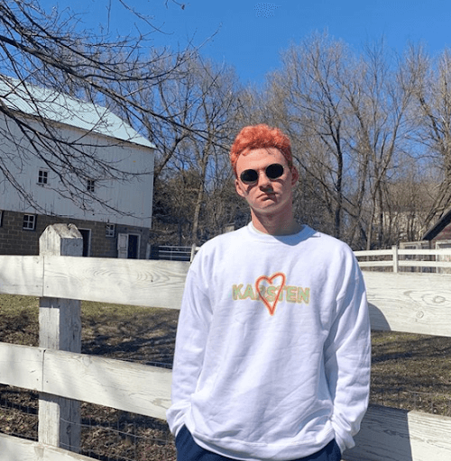

Karsten J. Runquist is an American filmmaker best known for his work on his self-titled YouTube channel where he critiques and analyzes films and other media. Karsten has made several short films and hosts a popular movie podcast with his friend Jeffrey Borislow. The podcast charted #3 in the iTunes Film/TV podcast category.
